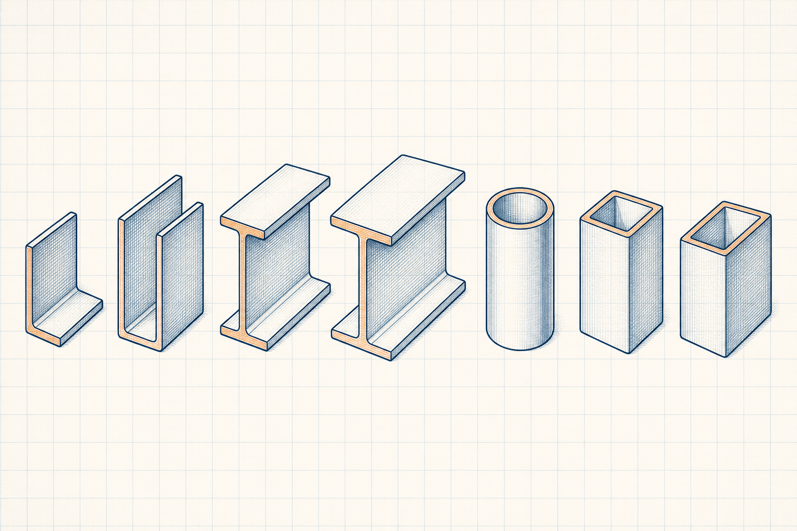

Circular Hollow Sections
CHS size, mass and property reference topics.
Reference topic IndustrialCalculation HubSearch topics, tools, articles...
IndustrialCalculation HubSearch topics, tools, articles...Reference topic group
Explore circular, square and rectangular hollow-section reference categories.

Explore by topic
CHS size, mass and property reference topics.
Reference topicSHS size, mass and property reference topics.
Reference topicRHS size, mass and property reference topics.
Reference topic